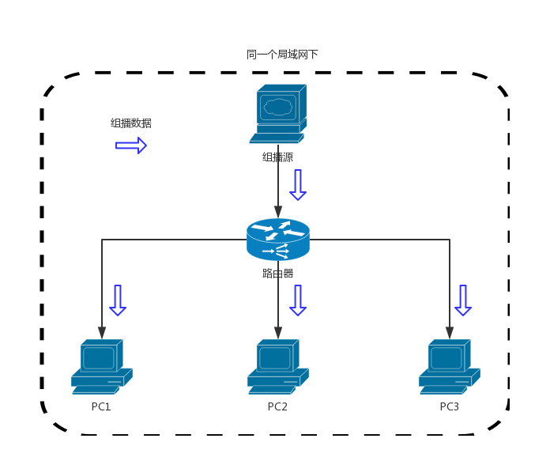
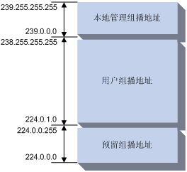
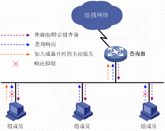
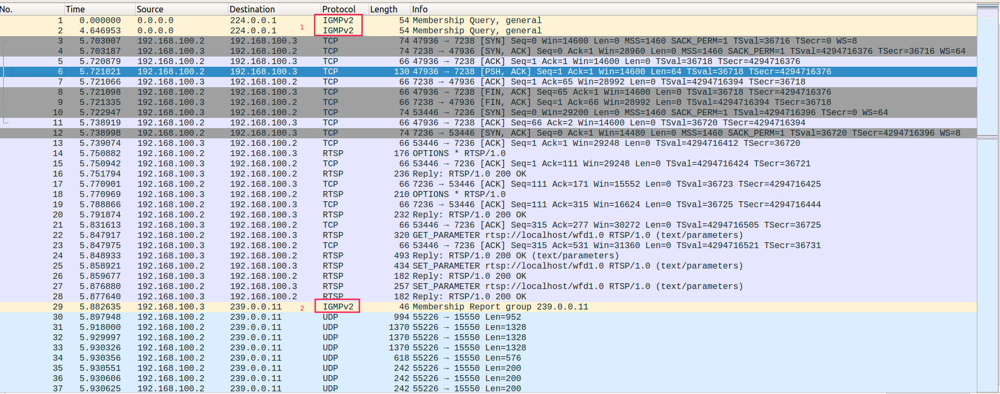

组播
目录
组播是指在 IP 网络中将数据包以尽力传送的形式发送到某个确定的节点集合（即组播组），其基本思想是：源主机（即组播源）只发送一份数据，其目的地址为组播组地址；组播组中的所有接收者都可收到同样的数据拷贝，并且只有组播组内的主机可以接收该数据，而其它主机则不能收到
组播技术有效地解决了 单点发送、多点接收 的问题，实现了 IP 网络中点到多点的高效数据传送，能够大量节约网络带宽、降低网络负载。作为一种与单播和广播并列的通信方式，组播的意义不仅在于此。更重要的是，可以利用网络的组播特性方便地提供一些新的增值业务，包括在线直播、网络电视、远程教育、远程医疗、网络电台、实时视频会议等互联网的信息服务领域

图1 multicast
组播技术实现
组播技术的实现需要解决以下几方面问题：
- 组播源向一组确定的接收者发送信息，而如何来标识这组确定的接收者？-–—这需要用到
组播地址机制； - 接收者通过加入组播组来实现对组播信息的接收，而接收者是如何动态地加入或离开组播组的？-–—即如何进行
组成员关系管理； - 组播报文在网络中是如何被转发并最终到达接收者的？-–—即
组播报文转发的过程； - 组播报文的转发路径（即组播转发树）是如何构建的？-–—这是由各
组播路由协议来完成的。
组播地址机制
IP 组播地址
图2 ip\_format
IP 组播地址前四位均为“1110”
IP 组播地址用于标识一个 IP 组播组。IANA 把 D 类地址空间分配给组播使用，范围从 224.0.0.0 到 239.255.255.255 。

图3 ip\_class
组播地址划分:
- 224.0.0.0 到 224.0.0.255 被 IANA 预留，地址 224.0.0.0 保留不做分配，其它地址供路由协议及拓扑查找和维护协议使用。该范围内的地址属于局部范畴，不论 TTL 为多少，都不会被路由器转发；
- 224.0.1.0 到 238.255.255.255 为用户可用的组播地址，在全网范围内有效。其中 232.0.0.0/8 为 SSM 组地址，而其余则属于 ASM 组地址。有关 ASM 和 SSM 的详细介绍，请参见“2.5 组播模型分类”一节；
- 239.0.0.0 到 239.255.255.255 为本地管理组播地址，仅在特定的本地范围内有效，也属于 ASM 组地址。使用本地管理组地址可以灵活定义组播域的范围，以实现不同组播域之间的地址隔离，从而有助于在不同组播域内重复使用相同组播地址而不会引起冲突。
224.0.1.0/24网段内的一些组播地址也被 IANA 预留给了某些组播应用。譬如，224.0.1.1被预留给 NTP（Network Time Protocol，网络时间协议）所使用。
组成员关系管理
组成员关系管理是指在=路由器/交换机=上建立直联网段内的组成员关系信息，具体说，就是各接口/端口下有哪些组播组的成员。
IGMP
IGMP 运行于 主机和与主机直连的路由器 之间，其实现的功能是双向的：
- 一方面，主机通过 IGMP 通知路由器希望接收某个特定组播组的信息；
- 另一方面，路由器通过 IGMP 周期性地查询局域网内的组播组成员是否处于活动状态，实现所连网段组成员关系的收集与维护。
通过 IGMP，在路由器中记录的信息是某个组播组是否在本地有组成员，而不是组播组与主机之间的对应关系。
目前 IGMP 有以下三个版本：
IGMPv1（RFC 1112）中定义了基本的组成员查询和报告过程；IGMPv2（RFC 2236）在 IGMPv1 的基础上添加了组成员快速离开的机制等；IGMPv3（RFC 3376）中增加的主要功能是成员可以指定接收或拒绝来自某些组播源的报文，以实现对 SSM 模型的支持。
IGMPv2 的工作原理

图4 IGMPv2
当同一个网段内有多个 IGMP 路由器时，IGMPv2 通过查询器选举机制从中选举出唯一的查询器。查询器周期性地发送普遍组查询消息进行成员关系查询，主机通过发送报告消息来响应查询。而作为组成员的路由器，其行为也与普通主机一样，响应其它路由器的查询。
当主机要加入组播组时，不必等待查询消息，而是主动发送报告消息；当主机要离开组播组时，也会主动发送离开组消息，查询器收到离开组消息后，会发送特定组查询消息来确定该组的所有组成员是否都已离开。
通过上述机制，在路由器里建立起一张表，其中记录了路由器各接口所对应子网上都有哪些组的成员。当路由器收到发往组 G 的组播数据后，只向那些有 G 的成员的接口转发该数据。至于组播数据在路由器之间如何转发则由组播路由协议决定，而不是 IGMP 的功能。
抓包信息

图5 multicast\_start\_package
IGMPv2 destination address
| Message Type | Multicast Address |
|---|---|
| General Query | All hosts (224.0.0.1) |
| Group-Specific Query | The group being queried |
| Membership Report | The group being reported |
| Leave Group All | routers (224.0.0.2) |
组播相关的含义：
IGMPv2: Membership Query, general
发给所有主机
IGMPv2: Membership Report group 239.0.0.11
收到后，回应组播地址
IGMP Snooping
IGMP 是针对 IP 层设计的，只能记录路由器上的三层接口与 IP 组播地址的对应关系。但在很多情况下，组播报文不可避免地要经过一些交换机，如果没有一种机制将二层端口与组播 MAC 地址对应起来，组播报文就会转发给交换机的所有端口，这显然会浪费大量的系统资源。
IGMP Snooping 的出现就可以解决这个问题，其工作原理为：主机发往 IGMP 查询器的报告消息经过交换机时，交换机对这个消息进行监听并记录下来，为端口和组播 MAC 地址建立起映射关系；当交换机收到组播数据时，根据这样的映射关系，只向连有组成员的端口转发组播数据。